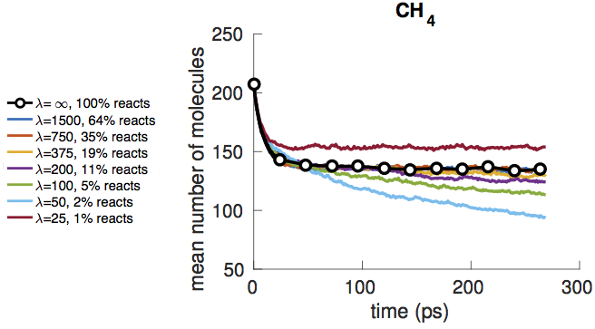

We develop a new method for computationally tractable model reduction of large-scale chemical reaction networks using L1 regularization. We use this method to study liquid methane under the high temperature and pressure conditions that occur during shock compression, and find that CH4 decomposition can be modeled with less than 9% relative error using only 11% of reactions. This work demonstrates how L1 regularization can be leveraged to formulate chemical model reduction as a convex optimization problem, enabling efficient reduction of reaction networks involving as many as tens of thousands of reactions with minimal human intervention.
One of the overarching goals in computational materials science is the development of fast, accurate and scalable models for simulating complex chemical or materials processes. These processes can often involve thousands of molecules and tens of thousands of reactions. Thus, it is necessary to seek highly reduced models that can sufficiently describe important features of the system. We show that model reduction can be formulated as a convex optimization problem, which is computationally efficient to solve and has a single minimum, distinguishing it from many challenging high-dimensional optimization problems faced in materials science. Furthermore, L1 regularization allows us to control the tradeoff between model reduction and error via a single regularization parameter.
We apply our algorithm to a molecular dynamics simulation of high temperature and high pressure methane, under thermodynamic conditions similar to that of liquid methane undergoing shock compression. We first use bond length and duration criteria developed in previous work to derive a stochastic model of the chemical reaction network consisting of more than 2600 elementary reactions and their corresponding reaction rate coefficients. We are then able to compute the tradeoff between reduction of the network and error in the resulting stochastic model by tuning the L1 regularization parameter.

CH4 decomposition can be modeled with less than 9% relative error using only 11% of reactions. We can tradeoff between reduction and error by tuning the L1 regularization parameter λ.
Publication:
Yang, Q., Sing-Long, C. A., Reed, E. J., L1 Regularization-Based Model Reduction of Complex Chemistry Molecular Dynamics for Statistical Learning of Kinetic Monte Carlo Models. MRS Advances, doi:10.1557/adv.2016.124 (2016).